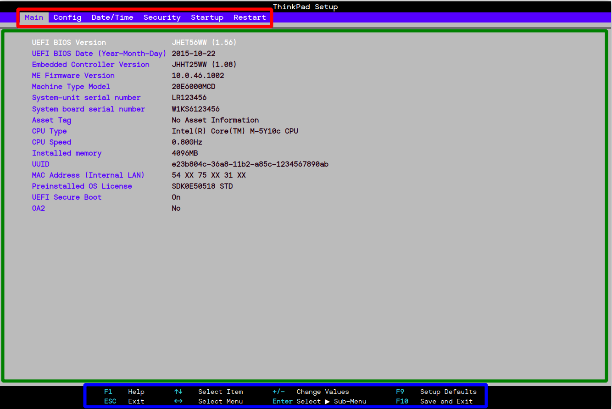
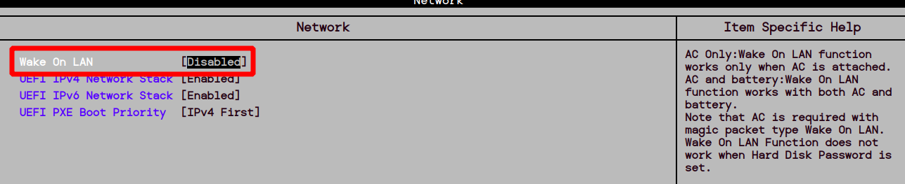
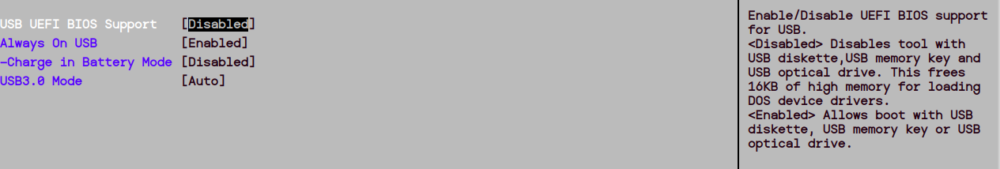
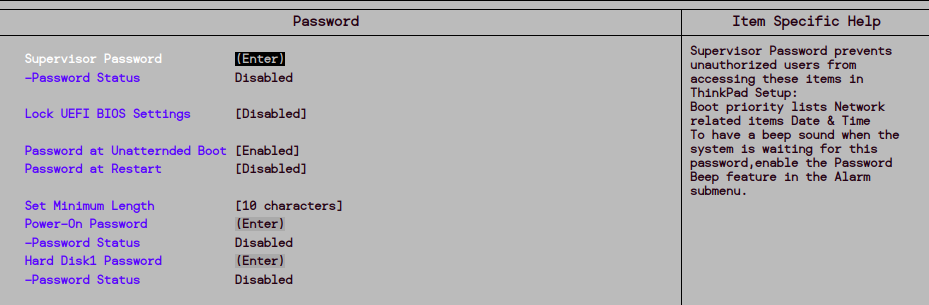
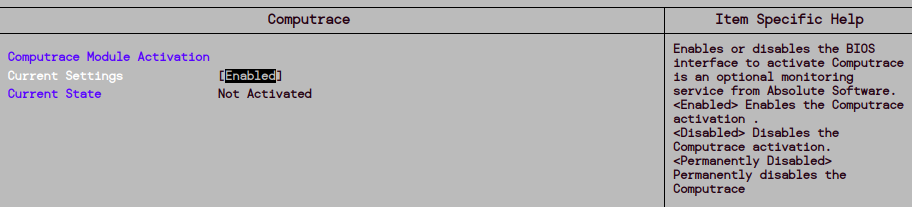
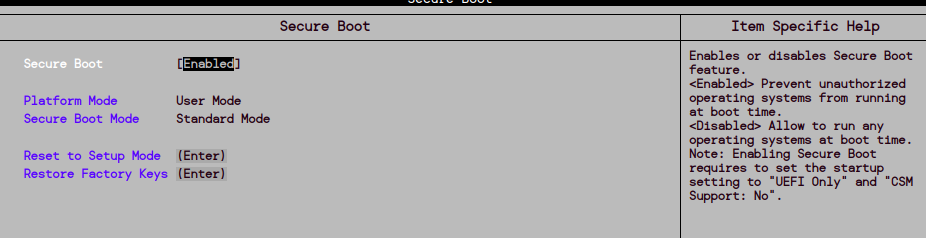
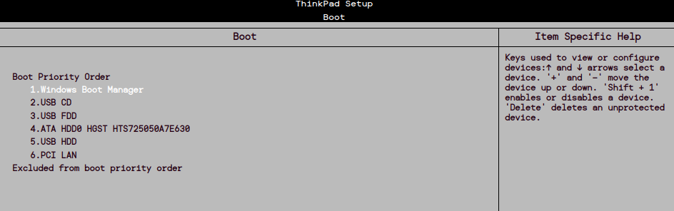

En esta primera parte de la práctica, gestionaremos una BIOS emulada en un portátil Lenovo para optimizar su seguridad.

Al acceder correctamente, encontraremos las pestañas de configuración. Aunque el diseño puede variar entre equipos, suelen ser similares.
La pantalla de la BIOS se divide en tres secciones principales:
A continuación, repasamos las configuraciones para mejorar la seguridad en cada pestaña.
En esta sección, deshabilitaremos la opción de arranque remoto para evitar que alguien encienda el portátil de manera remota:

Es recomendable dejar el resto de opciones en su configuración predeterminada.
Para evitar accesos no autorizados desde dispositivos externos, deshabilitaremos el arranque desde USB:

Esto impedirá que se inicie un sistema operativo desde un dispositivo externo.
No encontramos opciones de seguridad relevantes en esta pestaña, por lo que no es necesario realizar cambios.
Esta pestaña es clave para la seguridad de la BIOS. Configuraremos varias opciones críticas:
Accedemos a la sección de contraseñas para establecer varias protecciones importantes:

En esta sección, habilitamos Computrace, que permite rastrear, bloquear, borrar y monitorear el dispositivo en caso de robo:

Al activarlo, el dispositivo se conecta a los servidores de Absolute Software para gestionar las acciones anteriores.
Secure Boot impide la ejecución de software no autorizado durante el arranque del sistema:

Recomendamos activar esta opción.
En esta pestaña configuraremos el orden de arranque:

En la pestaña de Restart, guardamos los cambios y salimos de la BIOS.
Siguiendo estos pasos, habremos bastionado correctamente la BIOS para garantizar un entorno de inicio seguro y prevenido ante accesos no autorizados.